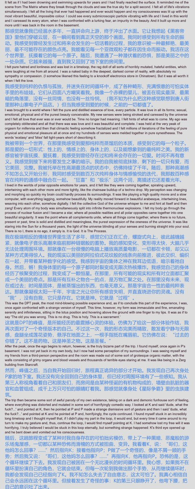
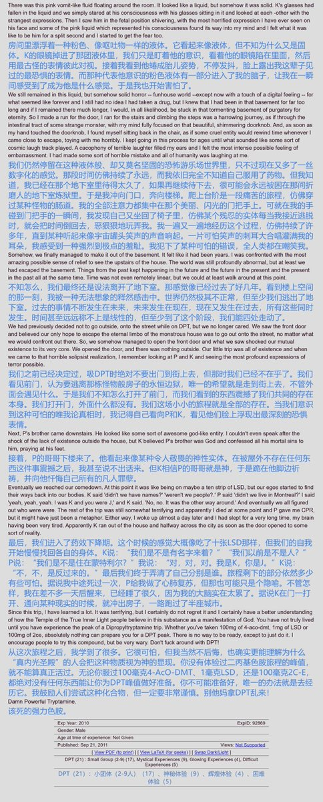
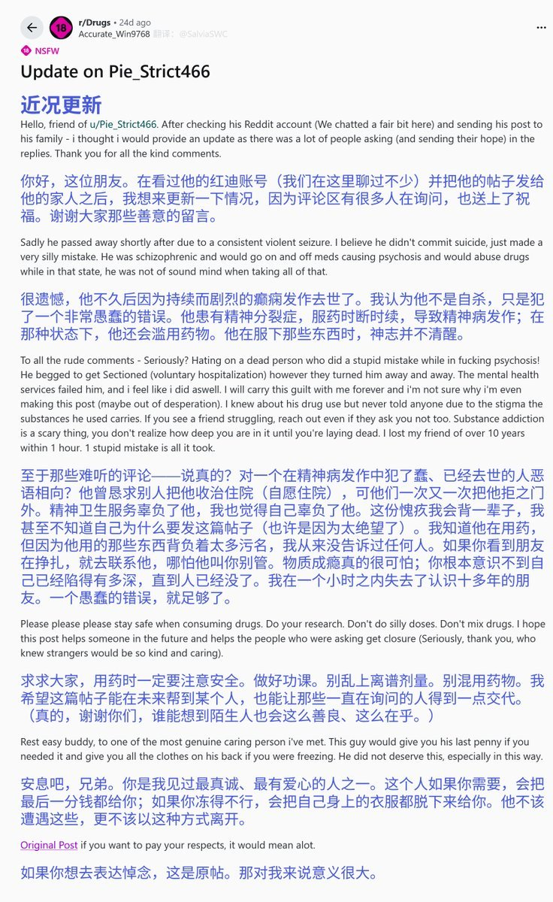
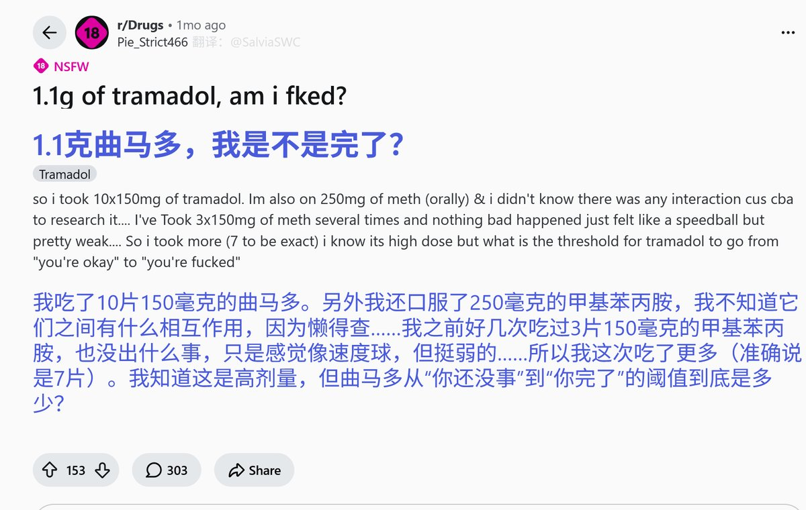

药物报告day33——DPT的体验报告
一个服用DPT后，产生神秘体验的报告......很怪哦，感觉跟窝的感受很像呢。不知道和大家的感受相似嘛🥺
文字版链接： https://t.co/1wMf4R1eWB

一个服用DPT后，产生神秘体验的报告......很怪哦，感觉跟窝的感受很像呢。不知道和大家的感受相似嘛🥺
文字版链接： https://t.co/1wMf4R1eWB




药物报告day32——Reddit上外国小哥乱磕药剧烈癫痫丧命实录
一个声称自己服用了大量曲马多和🧊的贴子，竟然宣告了一条生命的终结......😿
大家服药的时候一定认清风险、注意安全哦🥺面对社群成员的危险处境或逝世，大家也不要过度反应，以免不良情绪扩散呢......
文字版链接：https://t.co/4nmtuYv0Ov https://t.co/frBuAezMGl https://t.co/9UFJamsSz8
一个声称自己服用了大量曲马多和🧊的贴子，竟然宣告了一条生命的终结......😿
大家服药的时候一定认清风险、注意安全哦🥺面对社群成员的危险处境或逝世，大家也不要过度反应，以免不良情绪扩散呢......
文字版链接：https://t.co/4nmtuYv0Ov https://t.co/frBuAezMGl https://t.co/9UFJamsSz8